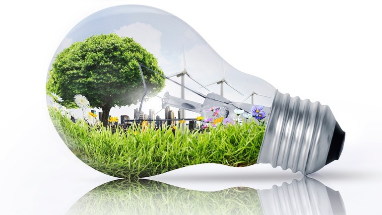

Energia Pulita
Il fotovoltaico non emette gas serra durante il funzionamento, riducendo l’impatto ambientale e contribuendo alla lotta contro i cambiamenti climatici.
• Riduzione delle emissioni di CO2: ogni kWh prodotto da un impianto fotovoltaico evita circa 0,5 kg di CO2 rispetto a una centrale a carbone.
• Nessun inquinamento acustico o atmosferico: i pannelli fotovoltaici operano in silenzio e non producono scarti.
• Utilizzo di superfici esistenti: tetti, capannoni, parcheggi e perfino facciate possono ospitare pannelli senza consumo di suolo.
